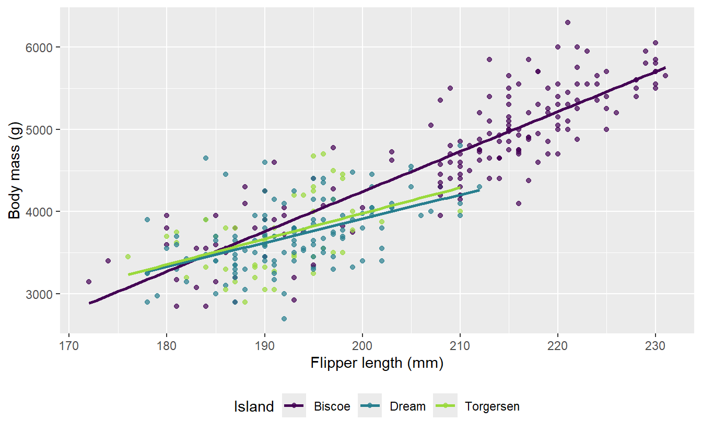
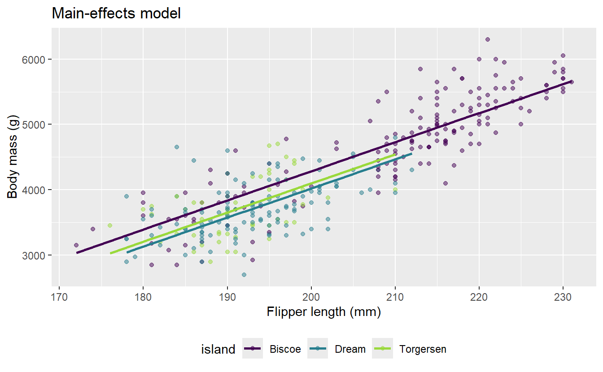
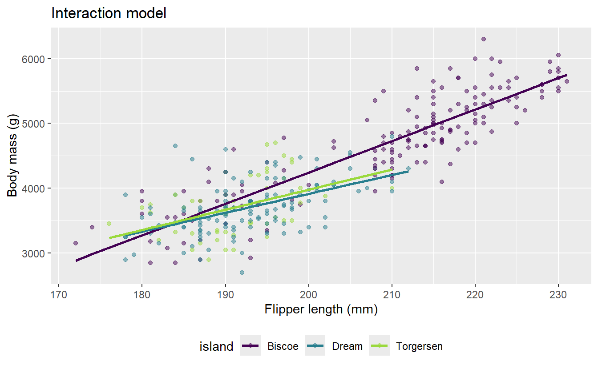

library(tidyverse)
library(tidymodels)
library(palmerpenguins)AE 10: body mass with multiple predictors
Suggested answers
Application exercise
Answers
Important
These are suggested answers. This document should be used as reference only; it is not designed to be an exhaustive key.
In the previous application exercise, we used a linear regression model with one predictor to study body mass of penguins from the Palmer archipelago. In this exercise, we will use both a numerical predictor and a categorical predictor to model body mass. We will also investigate whether the relationship between flipper length and body mass might differ by island.
Getting started
Packages
We will use the tidyverse package for data visualization and wrangling, the tidymodels package for modeling, and the palmerpenguins package for the data.
The main-effects model
So far, we fit the following main effects model:
bm_fl_island_main <- linear_reg() |>
fit(
body_mass_g ~ flipper_length_mm + island,
data = penguins
)
tidy(bm_fl_island_main)# A tibble: 4 × 5
term estimate std.error statistic p.value
<chr> <dbl> <dbl> <dbl> <dbl>
1 (Intercept) -4625. 392. -11.8 4.29e-27
2 flipper_length_mm 44.5 1.87 23.9 1.65e-74
3 islandDream -262. 55.0 -4.77 2.75e- 6
4 islandTorgersen -185. 70.3 -2.63 8.84e- 3- In this model, what assumption do we make about the relationship between flipper length and body mass across the three islands?
The main-effects model assumes that the relationship has the same slope on all three islands. The fitted lines are parallel: island may change the predicted level of body mass, but it does not change the predicted rate of increase in body mass as flipper length increases.
Could the slopes differ?
The following plot also fits a separate regression line for each island.
ggplot(
penguins,
aes(x = flipper_length_mm, y = body_mass_g, color = island)
) +
geom_point(alpha = 0.7) +
geom_smooth(method = "lm", se = FALSE) +
scale_color_viridis_d(end = 0.85) +
labs(
x = "Flipper length (mm)",
y = "Body mass (g)",
color = "Island",
) +
theme(legend.position = "bottom")
- How do these lines differ from the parallel fitted lines produced by the main effects model?
These lines are not constrained to be parallel. Each island has its own intercept and its own flipper length slope. The Biscoe island line is noticeably steeper than the Dream island and Torgersen island lines.
Fitting an interaction model
An interaction effects model allows the slope for flipper length to differ across islands. In a model formula, island * flipper_length_mm includes:
the main effect of
island,the main effect of
flipper_length_mm, andtheir interaction.
Fit the interaction model and examine its coefficients. Name the model
bm_fl_island_int.
bm_fl_island_int <- linear_reg() |>
fit(
body_mass_g ~ island * flipper_length_mm,
data = penguins
)
tidy(bm_fl_island_int)# A tibble: 6 × 5
term estimate std.error statistic p.value
<chr> <dbl> <dbl> <dbl> <dbl>
1 (Intercept) -5464. 431. -12.7 2.51e-30
2 islandDream 3551. 969. 3.66 2.89e- 4
3 islandTorgersen 3218. 1680. 1.92 5.62e- 2
4 flipper_length_mm 48.5 2.05 23.7 1.66e-73
5 islandDream:flipper_length_mm -19.4 4.94 -3.93 1.03e- 4
6 islandTorgersen:flipper_length_mm -17.4 8.73 -1.99 4.69e- 2- Which island is the baseline level?
Biscoe island is the baseline level. It does not appear as a separate indicator term in the model output.
Comparing the two models visually
- Set the following code cell’s
evaloption totrueto render the visualizations of main and interaction effect models. Describe what the code is doing.
bm_fl_island_main_aug <- augment(
bm_fl_island_main,
new_data = penguins
)
ggplot(
bm_fl_island_main_aug,
aes(x = flipper_length_mm, color = island)
) +
geom_point(aes(y = body_mass_g), alpha = 0.5) +
geom_line(aes(y = .pred), linewidth = 1) +
scale_color_viridis_d(end = 0.85) +
labs(
x = "Flipper length (mm)",
y = "Body mass (g)",
color = "island",
title = "Main-effects model"
) +
theme(legend.position = "bottom")
bm_fl_island_int_aug <- augment(
bm_fl_island_int,
new_data = penguins
)
ggplot(
bm_fl_island_int_aug,
aes(x = flipper_length_mm, color = island)
) +
geom_point(aes(y = body_mass_g), alpha = 0.5) +
geom_line(aes(y = .pred), linewidth = 1) +
scale_color_viridis_d(end = 0.85) +
labs(
x = "Flipper length (mm)",
y = "Body mass (g)",
color = "island",
title = "Interaction model"
) +
theme(legend.position = "bottom")

The code first uses augment() to add each model’s predictions to the penguins data. It then plots the observed values and connects the fitted values within each island. The main-effects plot shows predictions from the model with a common flipper length slope, while the interaction plot shows predictions from the model with a separate slope for each island.
- Describe the key difference between the fitted lines in the two plots.
The main-effects model produces three parallel lines with the same flipper length slope. The interaction model produces three lines with different slopes; the Biscoe island line is the steepest.
- Which model makes the stronger assumption about the relationship between flipper length and body mass? Explain.
The main-effects model makes the stronger assumption because it requires the flipper length slope to be the same for all three islands. The interaction model is more flexible because it allows the slope to vary by island.
Interpreting the interaction model
- Write the fitted interaction model using mathematical notation. Your model should contain six coefficient estimates.
\[ \begin{aligned} \widehat{\text{body mass %}} &= -5464 + 3551 \times \text{Dream island} + 3218 \times \text{Torgersen island} \\ &\quad + 48.5 \times \text{flipper length} \\ &\quad - 19.4 \times (\text{Dream island} \times \text{flipper length}) \\ &\quad - 17.4 \times (\text{Torgersen island} \times \text{flipper length}) \end{aligned} \]
- Write the model for Biscoe island penguins using mathematical notation. Then, interpret the slope for flipper length in context.
For Biscoe island penguins, both island indicators equal 0:
\[ \widehat{\text{body mass %}} = -5464 + 48.5 \times \text{flipper length} \]
Among Biscoe island penguins, each additional millimeter in flipper length is associated with a predicted 48.5 gram increase in body mass, on average.
- Write the model for Dream island penguins using mathematical notation. Then, interpret the slope for flipper length in context.
For Dream island penguins, the intercept is (-5464 + 3551 = -1913), and the flipper length slope is (48.5 - 19.4 = 29.1):
\[ \widehat{\text{body mass %}} = -1913 + 29.1 \times \text{flipper length} \]
Among Dream island penguins, each additional millimeter in flipper length is associated with a predicted 29.1 gram increase in body mass, on average.
- Write the model for Torgersen island penguins using mathematical notation. Then, interpret the slope for flipper length in context.
For Torgersen island penguins, the intercept is (-5464 + 3218 = -2246), and the flipper length slope is (48.5 - 17.4 = 31.1):
\[ \widehat{\text{body mass %}} = -2246 + 31.1 \times \text{flipper length} \]
Among Torgersen island penguins, each additional millimeter in flipper length is associated with a predicted 31.1 gram increase in body mass, on average.
- In the interaction model, what does the intercept represent? Is its interpretation meaningful for these data?
The intercept predicts a body mass of -5464 g for a Biscoe island penguin with 0 mm flipper length. This is not meaningful in context because neither is physically possible.
Comparing model fit
- Calculate the \(R^2\) and adjusted \(R^2\) for each model.
glance(bm_fl_island_main)# A tibble: 1 × 12
r.squared adj.r.squared sigma statistic p.value df logLik AIC BIC
<dbl> <dbl> <dbl> <dbl> <dbl> <dbl> <dbl> <dbl> <dbl>
1 0.774 0.772 383. 386. 7.60e-109 3 -2517. 5045. 5064.
# ℹ 3 more variables: deviance <dbl>, df.residual <int>, nobs <int>glance(bm_fl_island_int)# A tibble: 1 × 12
r.squared adj.r.squared sigma statistic p.value df logLik AIC BIC
<dbl> <dbl> <dbl> <dbl> <dbl> <dbl> <dbl> <dbl> <dbl>
1 0.786 0.783 374. 246. 4.55e-110 5 -2508. 5031. 5057.
# ℹ 3 more variables: deviance <dbl>, df.residual <int>, nobs <int>- Which model has the higher \(R^2\)? Why does adding interaction terms necessarily result in an \(R^2\) that is at least as high?
The interaction model has the higher \(R^2\): approximately 0.786, compared with 0.774 for the main-effects model. The interaction model contains all the terms in the main-effects model plus two additional terms. Those terms give it more flexibility to fit the observed data; if they are not helpful, their coefficients can effectively be 0, so \(R^2\) cannot decrease.
- Which model has the higher adjusted \(R^2\)? Why is adjusted \(R^2\) more useful than \(R^2\) for this comparison?
The interaction model also has the higher adjusted \(R^2\), approximately 0.783 versus 0.772. Adjusted \(R^2\) penalizes a model for adding predictor coefficients, so it helps determine whether the improvement in fit is sufficient to offset the additional complexity.
- How large is the difference in fit between the two models? Do you consider this difference practically meaningful?
The differences are small: \(R^2\) increases by about 0.012, and adjusted \(R^2\) increases by about 0.011. The interaction model explains only about one additional percentage point of variability, so the practical improvement is modest.
- Considering both model fit and simplicity, which model would you choose for predicting body mass? Justify your choice.
A reasonable choice is the main-effects model. Its fit is nearly as good, it uses two fewer coefficients, and its parallel lines are easier to communicate. Choosing the interaction model is also defensible if island-specific rates of change are substantively important, but the improvement in fit is small.